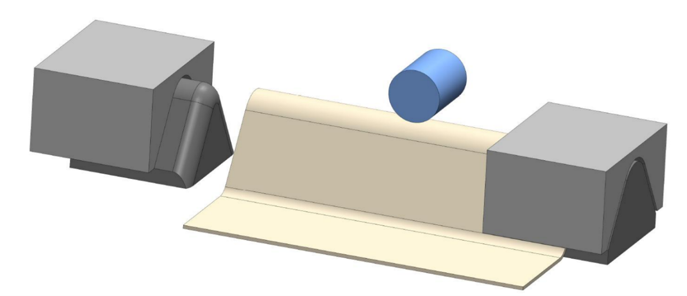
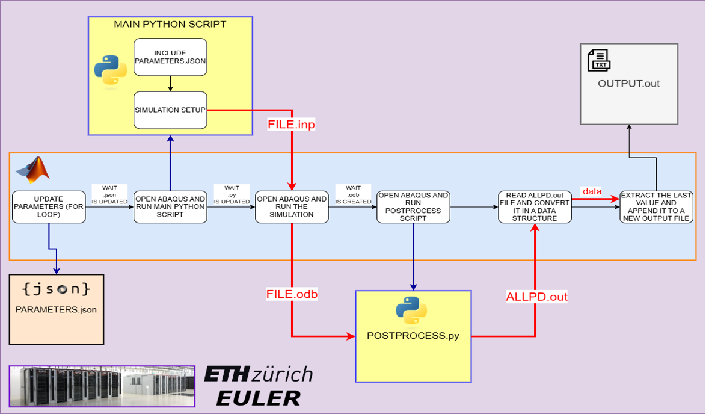
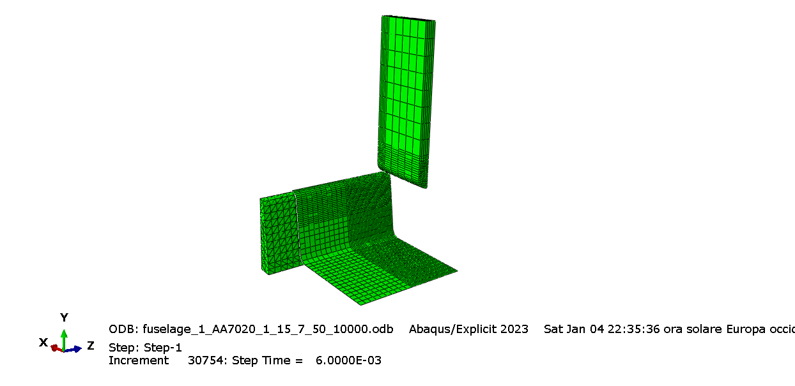
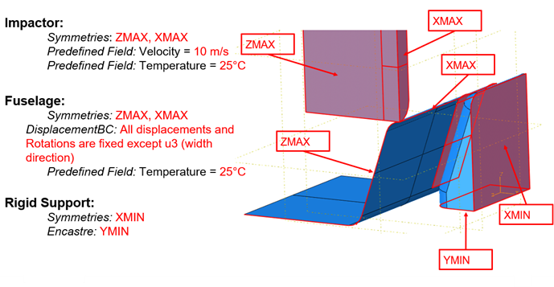
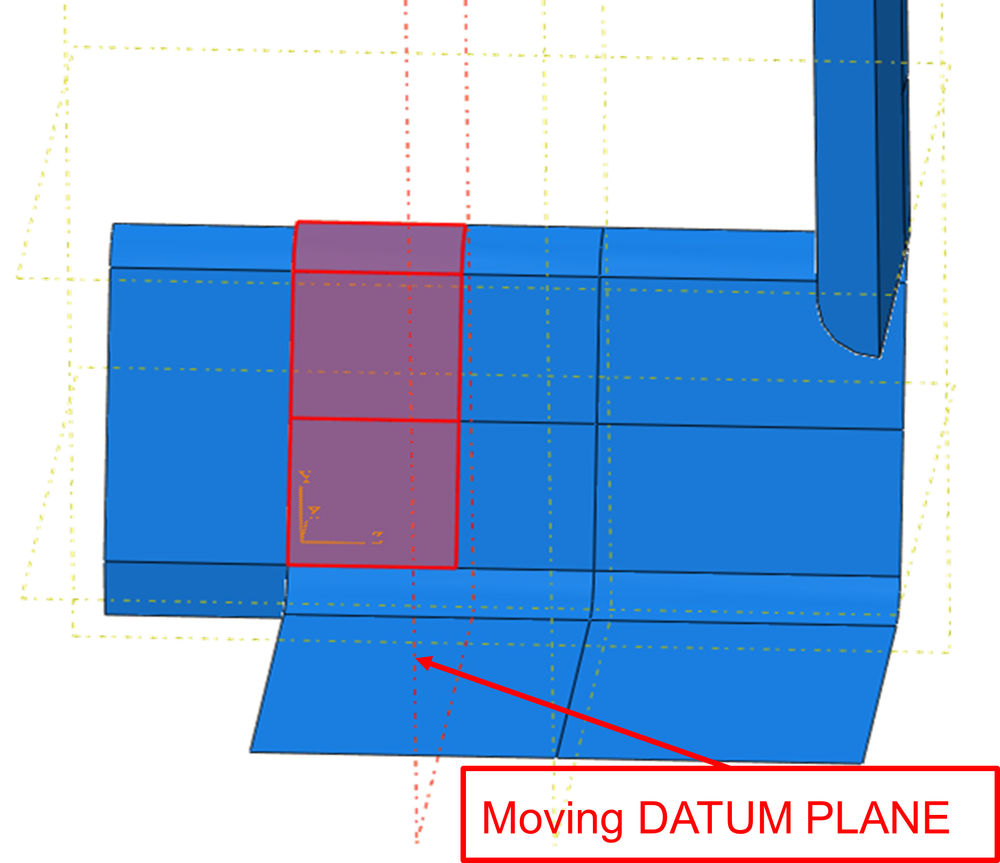
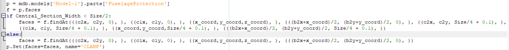
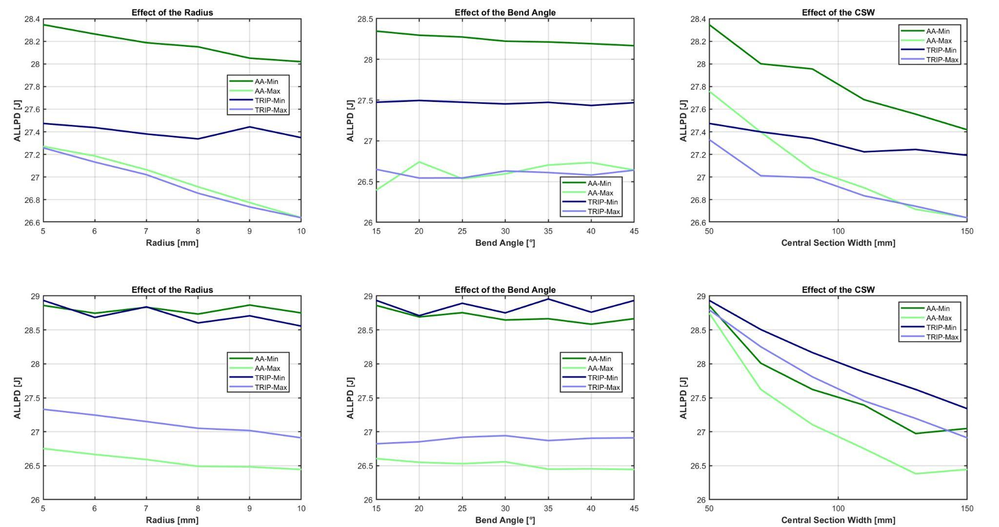
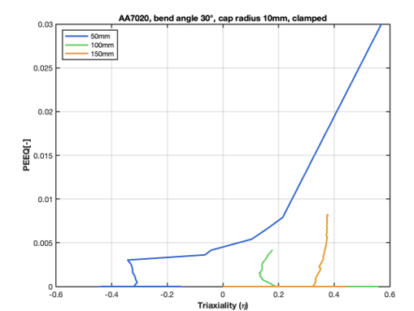

As part of my exam Dynamic Behaviour of Materials, during my first semester at ETH (11/2024 -01/2025), I worked on this project with 4 other students involving FE analysis in Abaqus. Specifically, we analysed the cover of an aircraft component (e.g., a FLAP) which is considered critical for flight control and for this reason its integrity must be protected. Two types of materials are under analysis, and the flap is subjected to impact with a heavy projectile.
The goals of the projects are:
The material of the impactor is Mars300, a very high strength steel. While the fuselage can be made of AA7020-T60, an aluminium alloy or TRIP780, a steel.
The plasticity of the three materials has been characterized using the Mixed Swift-Voce model, using available literature to find the parameters which fit the curves for the corresponding materials. For all three materials, a softening behaviour occurs with the increase of temperature, characterized by the Johnson-Cook model. Strain rate dependency occurs only in the two steels.
In all three materials, fracture has been described according to the Hosford-Coulomb fracture model, under the assumption of plane stress state.
I personally contributed to the coding of the main Matlab script which executes the entire system described in the picture.
The simulations were solved using the Abaqus dynamic explicit solver, the most suitable approach for high rate simulation like these. These simulations are quite computationally intensive. For this reason, they were run on the CPUs of the ETH cluster EULER.
Then I contributed also to some areas of the main python script, which can be executed by Abaqus to set up the simulation. We decided to use a fully parametric approach, which was a heavy time investment but resulted in a strong gain during the phase of the automatic parametric study. And we decided to design only 1½ of the geometry to save some computational time.
I designed the geometry of the impactor. Even if it looks a very simple geometry, I noticed that by using the task parameters, it resulted in a very long cylinder impacting radially on the fuselage. This setup created some artifacts in the extracted data due to the vibrations caused by the oscillation of the cylinder. My solution to maintain the same mass, without changing the incident radius was to put the mass above the cylinder instead of distributing it along the cylinder axis. Resulting in a more compact geometry and more stable results.
In terms of mesh size, we decided (by analysing a few of manual simulations) to refine some specific area and conduct a convergence study on those areas.
We decided to set the following constraints:
I personally contributed to the coding of the boundary conditions area (also using Abaqus macros). However, during the first executions of the matalb script for the parametric studies, we noticed that the selected area for the clamping constraint changed within the parametric study. I found that it was related to the presence of fixed and moving "datum planes".
Due to the presence of the FIXED DATUM PLANE, new edges and faces are created when the datum plane moves (due to the changing of the CENTRAL SECTION WIDTH). So the faces PICKED for the creation of the CLAMP constraint change according to the value of the CENTRAL SECTION WIDTH. I solved this issue by inserting an if statement like this in the code which describes the simulation setup before and after the value of the central section width.
To conduct the parametric study, we evaluated the absorbed plastic energy for the different geometical settings. What we noticed is that the effect of the bend angle is quite nelgligeble, while the most important parameters are the radius and the central section width. In any setting, wehen the radius and the central section width increase, the energy absorbed reduces, suggesting less plastification of the fuselage.
Min and Max refer to cases where, for a given material and parametric variable, the other two variables are at their minimum and maximum values respectively.
The results were confirmed also by the analysis of the fracture, which happens only in a few setups, all with the minimum central section width and clamped. In fact, only in very short and clamped cases, the stress state in the critical elements tends to be biaxial, leading to a significant damage.
